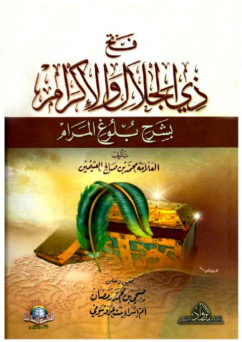

Downloads need an internet connection.
فتح ذي الجلال والإكرام بشرح بلوغ المرام- ط المكتبة الإسلامية
Authors: محمد بن صالح العثيمين
Editors: أم إسراء بنت عرفة بيومي صبحي بن محمد رمضان
Publishers: المكتبة الإسلامية للنشر والتوزيع
**▫️ العنوان: فتح ذي الجلال والإكرام بشرح بلوغ المرام- ط المكتبة الإسلامية** ▪️ المؤلف: #محمد_بن_صالح_العثيمين ▫️ المحقق: #صبحي_بن_محمد_رمضان • #أم_إسراء_بنت_عرفة_بيومي ▪️ الناشر: #المكتبة_الإسلامية_للنشر_والتوزيع ▫️ تاريخ النشر: 1327هـ 2006م ▪️ بلد النشر: القاهرة، #مصر ▫️ الطبعة: 1 ▪️ عدد الأجزاء: 6 ▫️ الصفحات: 3700 ▪️ نوع الوعاء: #كتاب ▫️ التصنيف الرئيسي: #الحديث_وعلومه ▪️ التصنيف الفرعي: #شروحات ۪